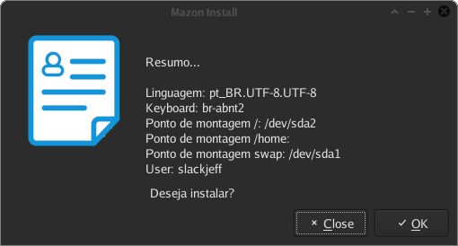

Índice
- Prefácio
- Instalação
- Pós Instalação
Prefácio
O que é MazonOS?
MazonOS é um sistema operacional GNU/Linux com base no Livro LFS. Criada para suprir uma necessidade única e segue a filosofia KISS (Keep it simple Stupid).
O nosso maior diferencial é que não tentamos imitar nenhuma outra distribuição! Andamos com nossas próprias pernas.
A Filosofia
A filosofia que o projeto segue é a KISS do inglês Keep It Simple Stupid que em português significa Matenha/fique no simples estúpido.
Ou seja, toda complexidade e camadas desnecessárias são descartadas!
Com a MazonOS o usuário tem o total controle do seu sistema.
Qual o Gerenciador de pacotes utilizado?
É utilizado o bananapkg em baixo nível e em alto nível o mz.
O bananapkg é responsável por gerenciar os pacotes, para uma breve comparação é como os gerenciadores (rpm, dpkg, pkgtool).
Então com o bananapkg é possível (criar, instalar, atualizar, remover e procurar).
Assim como todo gerenciador de baixo nível, ele não resolve dependência.
Já com a ferramenta mz é possível (baixar, instalar, atualizar) pacotes via Internet. Porém também não resolve dependências.
Instalação
Instalação Manual
A instalação manual da mazon é bem parecida com a distribuição Arch Linux. Como pré-requisito para este tipo de instalação você irá necessitar da LiveCD da Mazon ou uma outra distribuição GNU/Linux já instalada...
O primeiro passo é criar a(s) partições que você irá necessitar, em nosso caso por uma questão de exemplo vamos utilizar somente uma partição para raiz /.
* Se você estiver utilizando EFI crie primeiro uma partição no tipo EFI.
Vamos formatar a partição raiz / com o filesystem ext4, fica do seu gosto decidir qual melhor filesystem.
mkfs.ext4 /dev/sdx(x)
Se caso você estiver utilizando o EFI.
mkfs.fat -F32 /dev/sdx(x)
Próxima etapa é montar a partição que você escolheu para ser a raiz / do sistema.
Vamos utilizar o diretório /mnt para isto.
mount /dev/sdx(x) /mnt
Se você está usando EFI
mount /dev/sdx(x) /mnt/boot/EFI
Vamos descompactar o tarzão comprimido em /mnt, assim seu sistema já praticamente está instalado ;)
Aguarde que o processo pode ser um pouquinho demorado... Recomendo ir fazer uma pipoca.
tar xJpvf /Diretorio/do/pacote/mazonos.tar.xz -C /mnt
Ufa, não demorou tanto tempo assim não é? Bom, vamos agora entrar no diretório /mnt para montar o /proc /dev /sys.
Em seguida vamos entrar como chroot.
mount --type proc /proc proc/ mount --rbind /dev dev/ mount --rbind /sys sys/ mount --rbind /run run/ chroot /mnt
Agora você está dentro do seu sistema Mazon, fácil não? vamos editar o arquivo /etc/fstab.
Na chamada você irá precisar editar de acordo aonde está seu sistema raiz... Para um exemplo, usamos a partição /dev/sda1.
Use o seu editor de texto favorito para editar o /etc/fstab.
Um exemplo do /etc/fstab com a partição raiz /dev/sda1.
/dev/sda1 / ext4 defaults 1 1
Se caso você ter mais partições que estão separadas como home por exemplo, adicione também! É IMPORTANTE.
Exemplo:
# RAIZ /dev/sda1 / ext4 defaults 1 1 # Home /dev/sda2 /home ext4 defaults 1 2
Cara, está muito fácil tudo isso! Agora chegou a hora de finalizar com o grub...
Se você deseja usar o grub da Mazon siga o passo abaixo:
Instale o grub no seu dispositivo de origem. Se caso for sdb1 por exemplo, normalmente a origem é /dev/sdb.
A lógica é esta :).
E se for /dev/sdc1? Então seria /dev/sdc. Se caso você esteja confuso, utilize o comando lsblk para fazer a listagem dos dispositivos.
MazonOS Grub
grub-install /dev/sd(x)
Se você fez a instalação no modo EFI, você precisa instalar o grub com este comando:
grub-install --target=x86_64-efi --bootloader-id=mazon --recheck
Crie também o cfg do grub.
grub-mkconfig -o /boot/grub/grub.cfg
E para a finalização de tudo, vamos sair do chroot e desmontar a partição que estão montada em /mnt.
exit umount -Rl /mnt
Reinicie seu sistema!
DualBoot + Grub
Se você está instalando a Mazon em dualboot, apenas saia do chroot, desmonte a partição e atualize seu grub do sistema principal.
exit umount -Rl /mnt update-grub
Reinicie seu sistema!
Instalação Interface Gráfica
A facilidade que você tem de instalar a Mazon em modo automático, não perde para nenhuma outra distribuição de grande porte.
Em algumas poucas etapas você já tem o seu sistema em atividade.
Ao abrir a LiveCD, você vai se deparar com um icone presente na Área de Trabalho chamado Install-Mazon. Clique neste icone para iniciar a sua aventura.
Tela de Boas vindas
Irá abrir uma tela de boas vindas, avance para o próximo nível clicando em Ok
Selecionar Mapa Teclado
Selecione o Mapa do seu teclado, na imagem para exemplo utilizamos o padrão de quase todos Brasileiros: pt_BR.UTF-8.UTF-8 e Teclado br-abnt2.
Criação Usuário + Senha
Chegou a hora de criar seu usuário comum e a senha, lembre-se de criar uma senha segura de 12 digitos mais.
Dispositivo para instalação do sistema
Selecione o Dispositivo/HD aonde será instalado o seu sistema!
Automaticamente ele faz a listagem, tome cuidado... Principalmente se você estiver em Dual boot.
Se você estiver com dúvida, abra o terminal e utilize o comando lsblk para fazer a listagem de todos dispositivos.

Cuidado! Seus dados serão destruidos.
Não preciso comentar que os dados da partição serão literalmente destruidos.

Breve Resumo da instalação
O instalador lhe envia um resumo básico de toda instalação, se tudo estiver correto clique em Ok.
Vá comer uma pipoca
A instalação não é tão demorada! Pode demorar de 3 á 10 minutos. Isto vai variar de qual equipamento você tem.
Vá comer uma pipoca, por um café para passar ou até mesmo passear com seu dog!
Instalação da Mazon Grub
Chegou a hora da instalação do Grub, o instalador lhe envia os dispositivos para onde você pode instalar o grub!
Criando arquivo de configuração .cfg
O instalador vai criar um arquivo de configuração do grub .cfg. Coisa rápida! Nem esquenta.
Instalação Finalizada
Se você chegou nesta tela é só reiniciar sua máquina e usufruir do que a mazon tem a te oferecer!